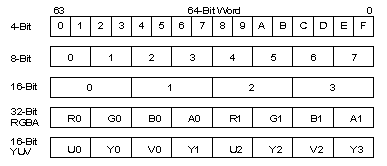
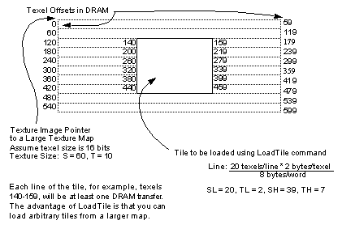
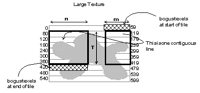
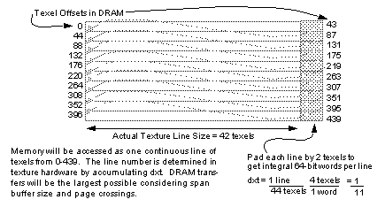

|
|
Texture Loading
Loading a texture actually consists of several steps. Internally, the RDP treats loading a texture as if it were rendering a textured rectangle into Tmem. To load a texture, you must describe the texture tile to be loaded, render (load) it into Tmem, and describe the tile to be rendered. An important consequence of these steps is that you can load a texture in one way and render it in completely different way.
For example, the GBI macro gsDPLoadTextureTile performs all the tile and load commands necessary to load a texture tile. The sequence of commands is shown below (macros shown without parameters):
gsDPSetTextureImage
gsDPSetTile /* G_TX_LOADTILE */
gsDPLoadSync
gsDPLoadTile /* G_TX_LOADTILE */
gsDPSetTile /* G_TX_RENDERTILE */
gsDPSetTileSize /* G_TX_RENDERTILE */
This sequence of commands loads a texture tile using the tile descriptor G_TX_LOADTILE (tile 7) and renders using G_TX_RENDERTILE (tile 0). Since the tile descriptor used to load the tile is different from the one used to render the texture, there is no possibility of tile usage conflict, so a TileSync command is unnecessary. The TileSync command is used in situations where you may want to use the same tile for both loading and rendering a texture. It basically inserts a bubble in the RDP pipeline to guarantee that the load tile descriptor isn’t changed by the render tile before the load is actually done.
The gsDPSetTextureImage command sets a pointer to the location of the image. Then the gsDPSetTile is used to indicate where in Tmem you want to place the image, how wide each line is, and the format and size of the texture. A gsDPLoadSync command makes sure that any previous load is completely finished before this texture is loaded. Then the actual gsDPLoadTile command is issued, which loads the texture into Tmem. The final gsDPSetTile and gsDPSetTileSize are used to set the tile descriptors correctly for the tile used when rendering.
The textures are stored big-endian in memory and should obey the following format for a 64-bit word in memory.
Figure 13.9.1 Texel Formats in DRAM
|  |
Load Tile
The LoadTile command allows a programmer to load an arbitrary rectangular region of a larger texture in DRAM into Tmem. The following examples assume a 16-bit texel type.
Figure 13.9.2 Example of LoadTile Command Parameters
|  |
When textures are loaded as a tile, it means that (at least) each line of the texture is a separate DRAM transfer. Each line’s transfer may be broken into multiple smaller transfers, depending on how big it is and whether it crosses DRAM page boundaries. Since the DRAMs are block transfer type devices, there is a fixed amount of overhead for each transfer, so long transfers are desirable. For this reason, you should try to load your texture using the longest dimension of the tile.
Also, each line of a tile is padded automatically to Tmem word (64-bit) boundaries. If your tile line size is not a multiple of 64-bits, some Tmem space is being wasted. Also when tiling a larger texture image into multiple tiles, an extra row and column are usually loaded to allow proper filtering of the texels along the border of the tile (to avoid seams).
Note: The RDP commands LoadTile, LoadBlock, and LoadTLUT set the tile parameters SL,TL,SH,TH when they are executed. After the load command, it may be necessary to use the SetTileSize command to restore these parameters if you want parameters other than were used in the Load command. In the gbi.h texture load macros, the SetTileSize command is always used following a Load command.
Wrapping a Large Texture Using Load Tile
It is possible to effectively ‘wrap’ large textures (textures too large to fit entirely in Tmem) by careful loading using the LoadTile command. There are (at least two) methods for doing this. Figure 13.9.3 shows a large texture in memory. We want to load a tile as if the texture had been wrapped in the S direction, and the tile straddles the wrap region.
Figure 13.9.3 Wrapping a Large Texture Using Two Tiles
 |
One way to effectively load the wrapped tile is to actually load two interleaved tiles. To interleave two tiles in Tmem, load tile 1 but set the tile’s Line parameter to n+m Tmem words, where n is the number of words in a line of Tile 1 and m is the number of words in tile 2. SL,SH,TL,TH should be set to load Tile 1. Now load Tile 2, setting the tile’s Tmem Address to n. Also set the SL,TL,SH,TH for Tile 2. After the loads, reset the render tile’s Tmem Address to 0. Set SL,SH,TL,SH to be the total composite tile size. Note that only Tile 1’s width must be a multiple of Tmem words. Tile 2’s width can be any number of texels and the remainder of the last Tmem word for each line will simply be undefined.
Another, possibly more straightforward method, relies on the fact that at the end of each line of the large texture, the addresses will naturally roll into the next line.
Figure 13.9.4 Wrapping a Large Texture Using One Tile
|  |
As shown in the figure above(13.9.4), you can load a single tile starting at address 60 minus m words. The tile’s Line parameter should equal m+n. Set the Tmem Address parameter to 0 during the load. Make sure to load T+1 lines. After the load, set Tmem Address to m, and set the SL,SH,TL,TH to the actual tile size. This method wastes m words at the beginning of Tmem and n words at the end of Tmem but has the advantage of using only one load.
Load Block
A more memory-bandwidth efficient way to load textures is the LoadBlock command. This command essentially treats each texture as a single long line of data. This allows the MI to transfer the maximum amount of data for each transfer.
Figure 13.9.5 Example of LoadBlock Command Parameters
|  |
The LoadBlock command uses the parameter dxt to indicate when it should start the next line. Dxt is basically the reciprocal of the number of words (64-bits) in a line. The texture coordinate unit increments a counter by dxt for each word transferred to Tmem. When this counter rolls over into the next integer value, the line count is incremented. The line count is important because the data in odd lines is swapped to allow interleaved access when rendering. This works great when dxt is a power of two. However, if dxt is not a power of two, the line counter can be corrupted due to accumulated error. Appendix A contains a table that indicates how many lines for a certain size can be in a load block for a tile before the line count is corrupted.
It is possible to load a set of texture tiles using a single LoadBlock command (MIP maps, for example). However, if the tiles have different widths, the single dxt parameter is not enough to do proper interleaving. In these cases, the data must be pre-interleaved and the dxt parameter should be set to zero.
The LoadTlut command is an efficient way of loading texture look-up tables into the high half of TMEM. System memory is conserved using this command as each 16-bit color value is “quadricated” as it is read in and written to the TMEM. In other words, it isn’t necessary to store four times the data in memory. The load hardware will expand it out into a 64-bit word during the load. This saves system memory as well as memory bandwidth. Two types of TLUTs are supported: 16-bit RGBA and 16-bit IA. TLUT depth can range from 16 words (4-bit CI) to 256 words (8-bit CI). LoadTile or LoadBlock can still be used for loading the TLUT however the data will have to be quadricated in system memory first.
Loading Notes
4-bit types should be loaded as 16-bit types and then rendered as 4-bit types. This does not restrict 4-bit types in any way and still allows for rows with an odd number of 4-bit texels.
When using LoadBlock, no more than 2048 texels can be loaded at once. So for example if you wanted to load 4K 8-bit texels, load them as 2K 16-bit texels and then render them as 8-bit texels. If you’re using 16-bit or 32-bit there is no need for a special case since TMEM cannot hold more than 2K 16-bit or 1K 32-bit texels.
To improve performance by minimizing the number of syncs required, the user can interleave the tile loads and renders with different tile indices. For example, load using tile 7 while rendering using tile 0.
|
Copyright © 1999 Nintendo of America Inc. All Rights Reserved Nintendo and N64 are registered trademarks of Nintendo Last Updated January, 1999 |